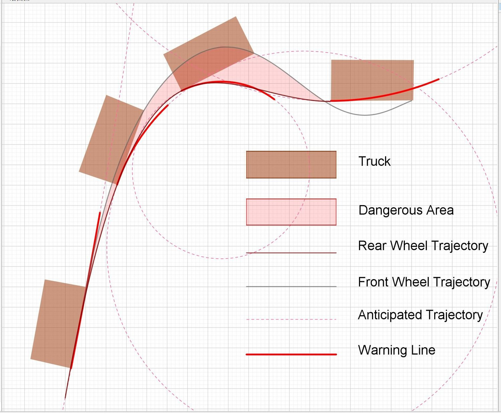

Reflection over Safety Line

3 years ago, my ENGR100 project was about an mechanical device that warn people about “inner-wheel-difference” phenomena (see Safety Line). At that time, we defined the problem to be a mechanical design problem. However, now I think our problem definition was wrong.
The problem should be how to remind people of the phenomena. It can be solved through education or mass media in a much more economic way than developing and equipping laser-projecting devices.
Since we defined a wrong problem at very beginning, our solution would be ineffective no matter how much effort we spent.